第二章 导数与微分
微分学是微积分学的基础与核心支柱. 它的两个基本概念是导数（Derivative）与微分（Differential）. 导数反映了函数相对于自变量的变化快慢程度（变化率）；微分则刻画了当自变量发生微小变化时，函数改变量的线性主要部分. 导数与微分源于经典力学（瞬时速度）与几何学（切线斜率）的实际需求，但在近代科学与工程技术中，已成为分析一切动态过程、非线性演变与局部线性逼近不可或缺的数学语言. 本章将从物理与几何引例出发，严格建立导数与微分的概念，推导完整的求导运算法则体系，并讨论高阶导数、隐函数与参数方程求导法，以及微分在工程近似估算中的应用.
第一节 导数概念
一、引例
在微积分发展的历史长河中，导数概念的形成主要源于两类基本问题：一是力学中确定非匀速运动质点的瞬时速度；二是几何学中作曲线的切线.
1. 直线运动的瞬时速度
设一质点沿直线作变速运动，其运动规律由位置函数 $s = s(t)$ 给出. 如果质点在时刻 $t_0$ 处于位置 $s(t_0)$，经过时间增量 $\Delta t$ 后到达时刻 $t_0 + \Delta t$，相应的位置变为 $s(t_0 + \Delta t)$. 质点在时间段 $[t_0, t_0 + \Delta t]$ 内走过的位移为：
$$\Delta s = s(t_0 + \Delta t) - s(t_0)$$
质点在这段时间内的平均速度为：
$$\bar{v} = \frac{\Delta s}{\Delta t} = \frac{s(t_0 + \Delta t) - s(t_0)}{\Delta t}$$
如果运动是不均匀的，平均速度只能粗略反映质点在较长时间内的运动状态，并不能精确表明在某一特定时刻 $t_0$ 的瞬时运动快慢. 为了求出时刻 $t_0$ 的瞬时速度 $v(t_0)$，只需让时间间隔 $\Delta t$ 无限趋于 $0$. 若极限存在，则瞬时速度定义为：
$$v(t_0) = \lim_{\Delta t \to 0} \bar{v} = \lim_{\Delta t \to 0} \frac{s(t_0 + \Delta t) - s(t_0)}{\Delta t}$$
2. 曲线的切线问题
初等几何中圆的切线定义为“与圆只有一个公共点的直线”，但在一般平面曲线上，切线完全可能穿过曲线或多次相交，初等定义失效. 为此，解析几何采用割线的极限位置来定义曲线的切线.
设连续曲线 $C$ 的方程为 $y = f(x)$，$M_0(x_0, y_0)$ 为曲线上固定的点，其中 $y_0 = f(x_0)$. 在 $M_0$ 附近曲线上任取另一点 $M(x, y)$，其坐标为 $(x_0 + \Delta x, f(x_0 + \Delta x))$，其中 $\Delta x = x - x_0$. 联结 $M_0$ 与 $M$，得到割线 $M_0 M$（如图 2-1、图 2-2 所示）.
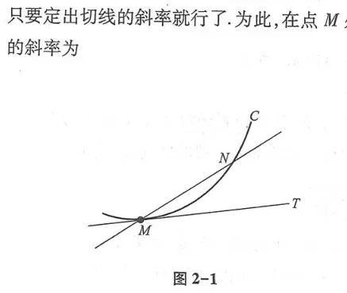
割线 $M_0 M$ 的倾角设为 $\varphi$，其斜率为：
$$\tan\varphi = \frac{\Delta y}{\Delta x} = \frac{f(x_0 + \Delta x) - f(x_0)}{\Delta x}$$
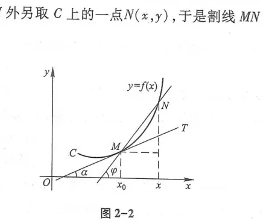
当点 $M$ 沿曲线 $C$ 无限趋近于固定点 $M_0$ 时，即 $\Delta x \to 0$，若割线 $M_0 M$ 绕点 $M_0$ 旋转并趋于一个极限位置直线 $T$，则称直线 $T$ 为曲线 $C$ 在点 $M_0$ 处的切线. 设切线 $T$ 的倾角为 $\alpha$，则切线斜率等于割线斜率的极限：
$$k = \tan\alpha = \lim_{\Delta x \to 0} \tan\varphi = \lim_{\Delta x \to 0} \frac{f(x_0 + \Delta x) - f(x_0)}{\Delta x}$$
对比瞬时速度公式与切线斜率公式，虽然物理和几何背景迥异，但它们的数学结构完全相同：都是函数增量与自变量增量之比在自变量增量趋于零时的极限. 这种高度抽象的运算模型就是导数.
二、导数的定义
设函数 $y = f(x)$ 在点 $x_0$ 的某个邻域内有定义. 当自变量 $x$ 在 $x_0$ 处取得增量 $\Delta x$（点 $x_0 + \Delta x$ 仍在邻域内）时，相应地因变量取得增量：
$$\Delta y = f(x_0 + \Delta x) - f(x_0)$$
如果差商比值 $\frac{\Delta y}{\Delta x}$ 当 $\Delta x \to 0$ 时的极限存在，则称函数 $y = f(x)$ 在点 $x_0$ 处可导，并称该极限值为函数 $y = f(x)$ 在点 $x_0$ 处的导数（Derivative），记作 $f'(x_0)$，即：
$$f'(x_0) = \lim_{\Delta x \to 0} \frac{\Delta y}{\Delta x} = \lim_{\Delta x \to 0} \frac{f(x_0 + \Delta x) - f(x_0)}{\Delta x}$$
导数的常用记号还有：$y'|_{x=x_0}, \quad \left.\frac{dy}{dx}\right|_{x=x_0}, \quad \left.\frac{df}{dx}\right|_{x=x_0}$.
如果令 $x = x_0 + \Delta x$，则 $\Delta x = x - x_0$. 当 $\Delta x \to 0$ 时等价于 $x \to x_0$，导数的定义式亦可等价写为：
$$f'(x_0) = \lim_{x \to x_0} \frac{f(x) - f(x_0)}{x - x_0}$$
单侧导数：
- 左导数：$f'_-(x_0) = \lim_{\Delta x \to 0^-} \frac{f(x_0 + \Delta x) - f(x_0)}{\Delta x} = \lim_{x \to x_0^-} \frac{f(x) - f(x_0)}{x - x_0}$
- 右导数：$f'_+(x_0) = \lim_{\Delta x \to 0^+} \frac{f(x_0 + \Delta x) - f(x_0)}{\Delta x} = \lim_{x \to x_0^+} \frac{f(x) - f(x_0)}{x - x_0}$
函数 $f(x)$ 在点 $x_0$ 处可导的充分必要条件是：左导数 $f'_-(x_0)$ 与右导数 $f'_+(x_0)$ 都存在且相等，即 $f'(x_0) = f'_-(x_0) = f'_+(x_0)$.
三、导数的几何意义
由切线引例可知，函数 $y = f(x)$ 在点 $x_0$ 处的导数 $f'(x_0)$，在几何上表示曲线 $y = f(x)$ 在点 $M(x_0, f(x_0))$ 处的切线斜率 $k = \tan\alpha = f'(x_0)$.
因此，过点 $M(x_0, y_0)$（其中 $y_0 = f(x_0)$）的切线方程为：
$$y - y_0 = f'(x_0)(x - x_0)$$
过切点 $M(x_0, y_0)$ 且垂直于切线的直线称为曲线在点 $M$ 处的法线（Normal Line）. 当 $f'(x_0) \ne 0$ 时，法线的斜率为 $-\frac{1}{f'(x_0)}$，法线方程为：
$$y - y_0 = -\frac{1}{f'(x_0)}(x - x_0)$$
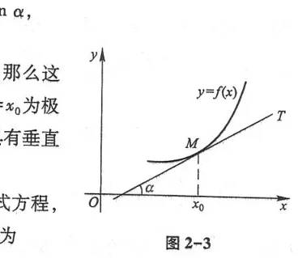
铅直切线：如果极限 $\lim_{\Delta x \to 0} \frac{f(x_0 + \Delta x) - f(x_0)}{\Delta x} = \infty$，则切线的倾角为 $\alpha = \frac{\pi}{2}$，曲线在点 $(x_0, f(x_0))$ 处具有铅直切线，切线方程为 $x = x_0$（如图 2-4、图 2-5 所示）. 此时按照定义，函数在该点不可导.
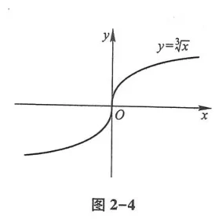
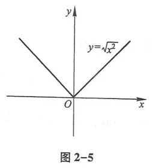
四、函数可导性与连续性的关系
若函数 $y = f(x)$ 在点 $x_0$ 处可导，则函数 $y = f(x)$ 在点 $x_0$ 处必连续.
因为 $f'(x_0) = \lim_{\Delta x \to 0} \frac{\Delta y}{\Delta x}$ 存在，根据极限与无穷小的关系，有：
$$\frac{\Delta y}{\Delta x} = f'(x_0) + \alpha \quad (\text{其中 } \lim_{\Delta x \to 0}\alpha = 0)$$
两边乘以 $\Delta x$，得到：
$$\Delta y = f'(x_0)\Delta x + \alpha \Delta x$$
因此，当 $\Delta x \to 0$ 时，$\lim_{\Delta x \to 0} \Delta y = \lim_{\Delta x \to 0}[f'(x_0)\Delta x + \alpha \Delta x] = 0$. 按照连续性的定义，函数 $f(x)$ 在点 $x_0$ 处连续. 证毕.
连续性是可导性的必要条件，但不是充分条件. 连续函数完全可以在某些点处不可导.
典型反例 1：函数 $f(x) = |x|$. 它在整个实数集上连续，但在 $x = 0$ 处： $$f'_+(0) = \lim_{x \to 0^+} \frac{|x| - 0}{x - 0} = \lim_{x \to 0^+} \frac{x}{x} = 1$$ $$f'_-(0) = \lim_{x \to 0^-} \frac{|x| - 0}{x - 0} = \lim_{x \to 0^-} \frac{-x}{x} = -1$$ 左、右导数不相等，故 $f(x) = |x|$ 在 $x = 0$ 处不可导（几何上呈现“尖点”角点）.
典型反例 2：魏尔斯特拉斯（Weierstrass）函数 $f(x) = \sum_{n=0}^\infty a^n \cos(b^n \pi x)$，在实轴上处处连续，却处处不可导. 这说明连续函数的可微性质极其丰富和深刻.
根据导数定义，求函数 $f(x) = x^2$ 的导函数 $f'(x)$.
对于任意自变量 $x$，赋予增量 $\Delta x$，对应的函数增量为：
$$\Delta y = f(x + \Delta x) - f(x) = (x + \Delta x)^2 - x^2 = 2x\Delta x + (\Delta x)^2$$
计算差商：
$$\frac{\Delta y}{\Delta x} = \frac{2x\Delta x + (\Delta x)^2}{\Delta x} = 2x + \Delta x \quad (\Delta x \ne 0)$$
取极限：
$$f'(x) = \lim_{\Delta x \to 0} \frac{\Delta y}{\Delta x} = \lim_{\Delta x \to 0} (2x + \Delta x) = 2x$$
即 $(x^2)' = 2x$.
设函数 $f(x) = \begin{cases} x^2 \sin\frac{1}{x}, & x \ne 0 \\ 0, & x = 0 \end{cases}$，讨论 $f(x)$ 在 $x = 0$ 处的连续性与可导性.
(1) 连续性：因为 $|\sin\frac{1}{x}| \le 1$，而当 $x \to 0$ 时 $x^2 \to 0$，无穷小量乘以有界变量仍为无穷小量，故：
$$\lim_{x \to 0} f(x) = \lim_{x \to 0} x^2 \sin\frac{1}{x} = 0 = f(0)$$
因此 $f(x)$ 在 $x = 0$ 处连续.
(2) 可导性：必须按定义计算在 $x = 0$ 处的导数：
$$f'(0) = \lim_{x \to 0} \frac{f(x) - f(0)}{x - 0} = \lim_{x \to 0} \frac{x^2 \sin\frac{1}{x} - 0}{x} = \lim_{x \to 0} x \sin\frac{1}{x} = 0$$
故 $f(x)$ 在 $x = 0$ 处可导，且 $f'(0) = 0$.
第二节 函数的求导法则
一、函数的和、差、积、商求导法则
设函数 $u = u(x)$ 和 $v = v(x)$ 在点 $x$ 处均可导，则它们的和、差、积、商（分母不为零时）在点 $x$ 处也可导，且：
- 和差法则：$[u(x) \pm v(x)]' = u'(x) \pm v'(x)$
- 积法则：$[u(x)v(x)]' = u'(x)v(x) + u(x)v'(x)$；特别地，常数因子可提出：$[Cu(x)]' = C u'(x)$
- 商法则：$\left[\frac{u(x)}{v(x)}\right]' = \frac{u'(x)v(x) - u(x)v'(x)}{[v(x)]^2} \quad (v(x) \ne 0)$
二、反函数的求导法则
如果函数 $x = f(y)$ 在某区间 $I_y$ 内单调、可导且 $f'(y) \ne 0$，那么它的反函数 $y = f^{-1}(x)$ 在对应区间 $I_x$ 内也可导，且：
$$(f^{-1})'(x) = \frac{1}{f'(y)} \quad \text{或} \quad \frac{dy}{dx} = \frac{1}{\frac{dx}{dy}}$$
语言表述：反函数的导数等于直接函数导数的倒数.
求反正弦函数 $y = \arcsin x$ 的导数 ($-1 < x < 1$).
函数 $y = \arcsin x$ 是 $x = \sin y$ 在区间 $y \in (-\frac{\pi}{2}, \frac{\pi}{2})$ 上的反函数. 在该区间内 $x = \sin y$ 单调可导，且 $\frac{dx}{dy} = \cos y > 0$. 根据反函数求导法则：
$$\frac{dy}{dx} = \frac{1}{\frac{dx}{dy}} = \frac{1}{\cos y} = \frac{1}{\sqrt{1 - \sin^2 y}} = \frac{1}{\sqrt{1 - x^2}}$$
因此得到标准公式：$(\arcsin x)' = \frac{1}{\sqrt{1 - x^2}}$. 类似可证 $(\arccos x)' = -\frac{1}{\sqrt{1 - x^2}}$，$(\arctan x)' = \frac{1}{1 + x^2}$.
三、复合函数求导法则（链式法则）
如果 $u = g(x)$ 在点 $x$ 可导，而 $y = f(u)$ 在对应的点 $u = g(x)$ 可导，则复合函数 $y = f(g(x))$ 在点 $x$ 可导，其导数为因变量对中间变量的导数乘以中间变量对自变量的导数，即：
$$\frac{dy}{dx} = \frac{dy}{du} \cdot \frac{du}{dx} \quad \text{或} \quad [f(g(x))]' = f'(g(x)) \cdot g'(x)$$
链式法则可以推广到有限多个中间变量的复合链：若 $y = f(u), u = \varphi(v), v = \psi(x)$，则 $\frac{dy}{dx} = \frac{dy}{du}\frac{du}{dv}\frac{dv}{dx}$.
四、基本初等函数的导数公式表
微积分学中的全部导数运算都可以基于以下 16 个基本导数公式以及四则运算、反函数与复合求导法则推导得出：
- $(C)' = 0$ ($C$ 为常数)
- $(x^\mu)' = \mu x^{\mu - 1}$ ($\mu$ 为任意实数)
- $(\sin x)' = \cos x$
- $(\cos x)' = -\sin x$
- $(\tan x)' = \sec^2 x$
- $(\cot x)' = -\csc^2 x$
- $(\sec x)' = \sec x \tan x$
- $(\csc x)' = -\csc x \cot x$
- $(a^x)' = a^x \ln a$ ($a > 0, a \ne 1$)
- $(e^x)' = e^x$
- $(\log_a x)' = \frac{1}{x \ln a}$ ($a > 0, a \ne 1$)
- $(\ln x)' = \frac{1}{x}$
- $(\arcsin x)' = \frac{1}{\sqrt{1 - x^2}}$
- $(\arccos x)' = -\frac{1}{\sqrt{1 - x^2}}$
- $(\arctan x)' = \frac{1}{1 + x^2}$
- $(\text{arccot } x)' = -\frac{1}{1 + x^2}$
第三节 高阶导数
函数 $y = f(x)$ 的导数 $y' = f'(x)$ 本身也是自变量 $x$ 的函数，称为函数 $y = f(x)$ 的一阶导数. 如果 $f'(x)$ 在点 $x$ 处仍然可导，我们称 $f'(x)$ 的导数为函数 $y = f(x)$ 在点 $x$ 处的二阶导数（Second-order Derivative），记作：
$$y'', \quad f''(x), \quad \frac{d^2 y}{dx^2}, \quad \text{或} \quad \frac{d}{dx}\left(\frac{dy}{dx}\right)$$
类似地，二阶导数的导数称为三阶导数，记作 $y''', f'''(x), \frac{d^3 y}{dx^3}$. 一般地，$(n-1)$ 阶导数的导数称为函数 $y = f(x)$ 的 $n$ 阶导数，记作：
$$y^{(n)}, \quad f^{(n)}(x), \quad \text{或} \quad \frac{d^n y}{dx^n}$$
常用初等函数的 $n$ 阶导数公式
- $(e^x)^{(n)} = e^x, \qquad (a^x)^{(n)} = a^x (\ln a)^n$
- $(\sin x)^{(n)} = \sin\left(x + n\cdot\frac{\pi}{2}\right)$
- $(\cos x)^{(n)} = \cos\left(x + n\cdot\frac{\pi}{2}\right)$
- $[(ax + b)^\mu]^{(n)} = \mu(\mu - 1)\dots(\mu - n + 1) a^n (ax + b)^{\mu - n}$
- $[\ln(1 + x)]^{(n)} = (-1)^{n-1} \frac{(n-1)!}{(1 + x)^n}$
若函数 $u = u(x)$ 和 $v = v(x)$ 都有 $n$ 阶导数，则它们的乘积 $uv$ 的 $n$ 阶导数具有类似二项式展开的形式：
$$(uv)^{(n)} = \sum_{k=0}^n \binom{n}{k} u^{(n-k)} v^{(k)} = u^{(n)}v + n u^{(n-1)}v' + \frac{n(n-1)}{2!} u^{(n-2)}v'' + \dots + u v^{(n)}$$
求 $y = x^2 e^{2x}$ 的 $n$ 阶导数 $y^{(n)}$ ($n \ge 2$).
设 $u = e^{2x}, v = x^2$. 则 $u^{(k)} = 2^k e^{2x}$. 对于多项式 $v = x^2$，其各阶导数为：$v' = 2x, v'' = 2, v^{(k)} = 0$ ($k \ge 3$).
根据莱布尼茨公式，展开式中仅有前三项非零：
$$(x^2 e^{2x})^{(n)} = u^{(n)}v + n u^{(n-1)}v' + \frac{n(n-1)}{2} u^{(n-2)}v''$$
$$= 2^n e^{2x} \cdot x^2 + n 2^{n-1} e^{2x} \cdot 2x + \frac{n(n-1)}{2} 2^{n-2} e^{2x} \cdot 2$$
$$= 2^{n-2} e^{2x} \left(4x^2 + 4nx + n(n-1)\right)$$
第四节 隐函数及由参数方程所确定的函数的导数 相关变化率
一、隐函数的导数
如果变量 $x$ 与 $y$ 之间的函数关系由一个方程 $F(x, y) = 0$ 所确定，称 $y$ 为 $x$ 的隐函数. 求隐函数导数不必化为显式，直接在方程两端对自变量 $x$ 求导，注意遇到含 $y$ 的项时视其为复合函数应用链式法则（乘以 $y'$），然后解出 $y'$ 即可.
二、对数求导法
对数求导法主要适用于：(1) 幂指函数 $y = u(x)^{v(x)}$；(2) 含有多个因子连乘、连除或开方的复杂函数. 先在等式两端取自然对数 $\ln y = v(x)\ln u(x)$，然后再对 $x$ 两端求导：$\frac{y'}{y} = [v(x)\ln u(x)]'$，从而得到 $y' = y \cdot [v(x)\ln u(x)]'$.
三、由参数方程所确定的函数的导数
若平面曲线由参数方程给出：
$$\begin{cases} x = \varphi(t) \\ y = \psi(t) \end{cases}$$
设 $\varphi(t), \psi(t)$ 均可导且 $\varphi'(t) \ne 0$. 由反函数求导法则与复合函数求导法则，该参数曲线所确定的函数 $y = f(x)$ 的一阶导数为：
$$\frac{dy}{dx} = \frac{\frac{dy}{dt}}{\frac{dx}{dt}} = \frac{\psi'(t)}{\varphi'(t)}$$
二阶导数是 $\frac{dy}{dx}$ 对 $x$ 的导数，仍视为参数 $t$ 的函数再复合求导：
$$\frac{d^2 y}{dx^2} = \frac{d}{dx}\left(\frac{dy}{dx}\right) = \frac{\frac{d}{dt}\left(\frac{dy}{dx}\right)}{\frac{dx}{dt}} = \frac{\frac{d}{dt}\left(\frac{\psi'(t)}{\varphi'(t)}\right)}{\varphi'(t)} = \frac{\psi''(t)\varphi'(t) - \psi'(t)\varphi''(t)}{[\varphi'(t)]^3}$$
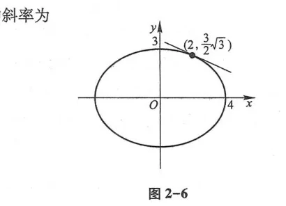
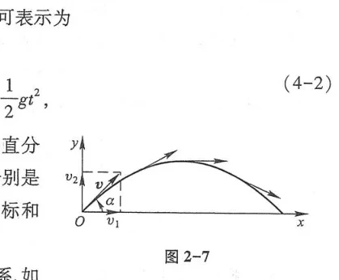
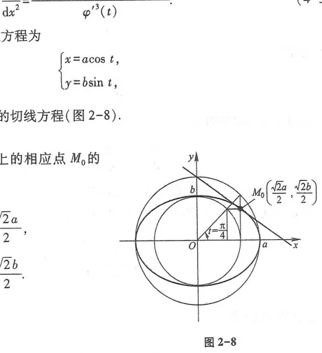
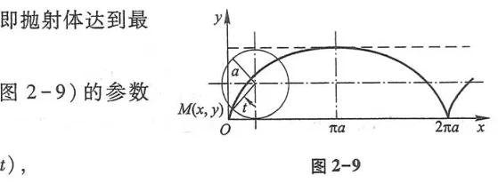
四、相关变化率
在许多实际问题中，两个或多个物理量都随时间 $t$ 变化，并且它们之间存在某种几何或物理约束方程. 若已知其中一个变化率，通过对约束方程两边关于时间 $t$ 求导，就能求出另一个量的变化率，这称为相关变化率（Related Rates）.
第五节 函数的微分
一、微分的定义与几何意义
考虑一块正方形金属薄片受热膨胀的问题（图 2-10）. 设原边长为 $x_0$，边长增量为 $\Delta x$，则面积改变量为：
$$\Delta S = (x_0 + \Delta x)^2 - x_0^2 = 2x_0 \Delta x + (\Delta x)^2$$
这里包含两部分：第一部分 $2x_0 \Delta x$ 是 $\Delta x$ 的线性函数，当 $\Delta x$ 很小时构成改变量的主要部分；第二部分 $(\Delta x)^2$ 是较 $\Delta x$ 高阶的无穷小 $o(\Delta x)$. 提取出线性主部，正是微分的核心思想.
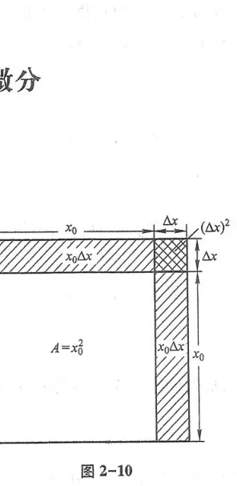
设函数 $y = f(x)$ 在某区间内有定义，$x_0$ 及 $x_0 + \Delta x$ 在该区间内. 如果增量 $\Delta y = f(x_0 + \Delta x) - f(x_0)$ 可以表示为：
$$\Delta y = A \Delta x + o(\Delta x) \quad (\Delta x \to 0)$$
其中 $A$ 是不依赖于 $\Delta x$ 的常数，则称函数 $y = f(x)$ 在点 $x_0$ 处可微（Differentiable），并称 $A \Delta x$ 为函数在点 $x_0$ 相应于自变量增量 $\Delta x$ 的微分，记作 $dy$ 或 $df(x_0)$，即：
$$dy = A \Delta x$$
一元函数 $y = f(x)$ 在点 $x_0$ 处可微的充分必要条件是函数在点 $x_0$ 处可导，且当可微时，必有 $A = f'(x_0)$.
通常取自变量的微分等于增量 $dx = \Delta x$，因此微分写为：
$$dy = f'(x)dx \quad \Longrightarrow \quad \frac{dy}{dx} = f'(x)$$
这说明导数又可视为因变量微分与自变量微分的商，因此导数又常称为微商.
微分的几何意义：如图 2-11、图 2-12 所示，$\Delta y = MQ$ 是曲线上点的纵坐标真实改变量，而 $dy = MP = f'(x_0)\Delta x$ 是曲线在点 $M$ 处切线上相应点的纵坐标增量. 因此，微分是用切线段局部线性替代曲线弧段.
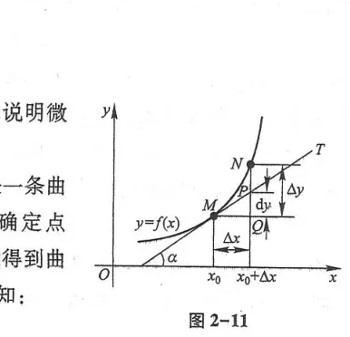
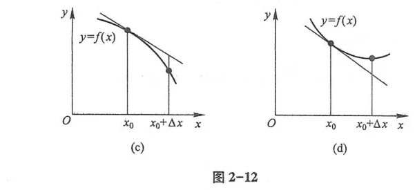
二、一阶微分形式不变性
无论是自变量还是中间复合变量，$y = f(u)$ 的微分形式永远保持相同： $$dy = f'(u)du$$ 这一优良性质使得在计算复合函数微分和后续不定积分换元运算时极为简便.
三、微分在近似计算与误差估计中的应用
当 $|\Delta x|$ 很小时，利用 $\Delta y \approx dy = f'(x_0)\Delta x$，有近似计算基本公式：
$$f(x_0 + \Delta x) \approx f(x_0) + f'(x_0)\Delta x$$
常用的几个特例（$x_0 = 0$ 时）：
- $(1 + x)^\alpha \approx 1 + \alpha x \quad (|x| \ll 1)$
- $\sin x \approx x \quad (|x| \ll 1)$
- $\tan x \approx x \quad (|x| \ll 1)$
- $e^x \approx 1 + x \quad (|x| \ll 1)$
- $\ln(1 + x) \approx x \quad (|x| \ll 1)$
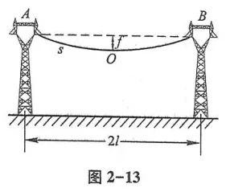
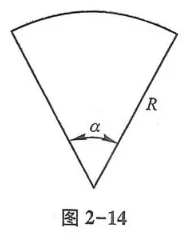
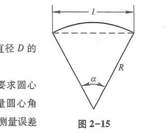
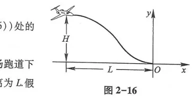
总习题二
1. 填空与单选题：
(1) 设 $f(x)$ 在 $x = a$ 处可导，且 $f'(a) = 2$，则 $\lim_{h \to 0} \frac{f(a + 2h) - f(a - h)}{h} =$ $6$ .
(2) 设 $f(x) = \begin{cases} x^2, & x \le 1 \\ ax + b, & x > 1 \end{cases}$ 在 $x = 1$ 处可导，则 $a =$ $2$ ，$b =$ $-1$ .
(3) 曲线 $y = x^3 - 3x$ 在点 $(2, 2)$ 处的切线方程为 $9x - y - 16 = 0$ ，法线方程为 $x + 9y - 20 = 0$ .
2. 求下列函数的导数或导函数：
(1) $y = x^{\sin x}$ ($x > 0$)；
解：取对数 $\ln y = \sin x \ln x$，两边求导：$\frac{y'}{y} = \cos x \ln x + \frac{\sin x}{x}$，故 $y' = x^{\sin x}\left(\cos x \ln x + \frac{\sin x}{x}\right)$.
(2) $y = \ln(\sqrt{1 + x^2} - x)$；
解：$y' = \frac{1}{\sqrt{1 + x^2} - x} \cdot \left(\frac{x}{\sqrt{1 + x^2}} - 1\right) = \frac{1}{\sqrt{1 + x^2} - x} \cdot \frac{x - \sqrt{1 + x^2}}{\sqrt{1 + x^2}} = -\frac{1}{\sqrt{1 + x^2}}$.
(3) 设方程 $e^y + xy = e$ 确定隐函数 $y = y(x)$，求 $y'|_{x=0}$ 及 $y''|_{x=0}$.
解：当 $x = 0$ 时，$e^y + 0 = e \implies y(0) = 1$. 方程两端对 $x$ 求导：$e^y y' + y + x y' = 0 \implies y'(0) = -\frac{1}{e}$. 再次求导可得 $y''(0) = \frac{2e - 1}{e^3}$.
3. 求由摆线参数方程 $\begin{cases} x = a(t - \sin t) \\ y = a(1 - \cos t) \end{cases}$ ($a > 0$) 所确定的函数在 $t = \frac{\pi}{2}$ 处的 $\frac{dy}{dx}$ 及 $\frac{d^2 y}{dx^2}$.
解：$\frac{dx}{dt} = a(1 - \cos t), \frac{dy}{dt} = a\sin t$.
$\frac{dy}{dx} = \frac{a\sin t}{a(1 - \cos t)} = \cot\frac{t}{2}$. 当 $t = \frac{\pi}{2}$ 时，$\frac{dy}{dx} = \cot\frac{\pi}{4} = 1$.
$\frac{d^2 y}{dx^2} = \frac{\frac{d}{dt}(\cot\frac{t}{2})}{\frac{dx}{dt}} = \frac{-\frac{1}{2}\csc^2\frac{t}{2}}{a(1 - \cos t)} = -\frac{1}{2a(1 - \cos t)\sin^2\frac{t}{2}} = -\frac{1}{4a\sin^4\frac{t}{2}}$. 当 $t = \frac{\pi}{2}$ 时，$\frac{d^2 y}{dx^2} = -\frac{1}{a}$.